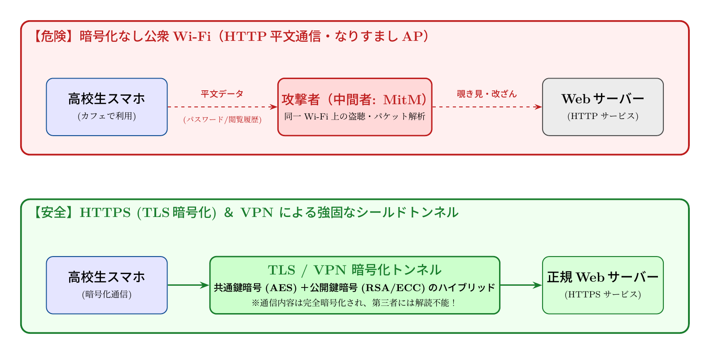

🎨 4コマ漫画挿絵（文字なし）
AI高解像度生成
▲ 【挿絵】青葉台高校 情報科学部＆帝都科学大学サイバーディフェンス・ラボでの実践シーン
📖 小説本文
街角のカフェ『L'Aube』は、焙煎された豆の香りと、微かなジャズの旋律に包まれていた。 窓際の席に座る城崎悠真は、手元のノートPCを叩くことだけに集中していた。メカニカルキーボードが奏でる規則正しい打鍵音は、周囲の喧騒を切り裂く心地よいリズムを刻む。
「ねえ、悠真君！ 見て、この『Free_WiFi_Guest』ってやつ。パスワードなしで繋がるよ！」
隣の席から、橘葵が身を乗り出してスマートフォンの画面を見せてきた。彼女の指先は、接続ボタンを押そうとして今にも跳ね飛ばされそうだ。
「……待って、葵。その接続ボタン、押す前に一度だけ考えて」 「えー、だってギガが減らないんだよ？ これさえ繋がれば、動画もSNSも無制限に楽しめるって……」 「それこそが罠の入り口だよ」
悠真は視線を画面から外さず、淡々と告げた。葵は「えっ？」と顔をしかめる。
「『無料』という甘い誘いは、往々にしてセキュリティを放棄していることの代償だ。特にこの手のパスワードなしの公衆無線LAN。それを使っている間、君の端末から出るデータは、いわば『裸』で街中に放流されているのと同じなんだよ」
「裸って……そんなことあるの？」 葵の瞳に動揺の色が混じる。悠真はキーボードを叩く手を止め、彼女の方を向いた。
「想像してみて。電波っていうのは、誰でも拾えるものだ。君がカフェのWi-Fiに繋いでいる時、その信号は壁を通り、空を飛び、周囲のあらゆる機器に届いている。もし悪意のある第三者が近くで『パケットスニッファ』というツールを動かしていれば、君が見ている画面の内容や、入力したパスワードの一部が筒抜けになる可能性がある」
「それって……誰でも見れるってこと？」 「そうだ。特に『中間者攻撃（Man-in-the-Middle）』という手法を使えば、攻撃者は君とルーターの間に立って、通信を中継するだけでいい。君は正しくネットに繋がっているつもりでも、実際には犯人のサーバーを経由して、彼らの監視下でデータをやり取りしていることになる」
悠真の言葉に、葵は背筋を凍らせたような表情をした。画面の中の輝く世界が、一瞬で薄暗い路地裏に変わったかのような錯覚。
「実際、いかに危険な状況なのか、少しだけ見せてあげよう」 悠真は手元の端末を操作し、あるソフトウェアを立ち上げた。画面上には複雑なログの羅列が高速で流れ始める。 「例えば、この『Evil Twin（エビル・ツイン）』という手法を見てくれ。攻撃者は本物のWi-Fiと同じ名前のアクセスポイントを偽装して設置する。君のスマホは、より強い電波を発信している偽のアクセスポイントを『本物』だと誤認して自動で繋がってしまうんだ」
「嘘……そんなの、見分けるの無理じゃない？」 葵の声が震える。悠真は画面上の緑色のシールドアイコンを指し示した。
「だからこそ、僕たちは『暗号化』という盾が必要になる。例えば君が見ているブラウザのURL。左側に鍵のマークがついているか、それとも『https』で始まっているかを確認するんだ。これがHTTPS通信だ」 「あ、あそこね！ いつもついてるけど、何が良いの？」
「それは、TLS（Transport Layer Security）というプロトコルを使って、通信の内容を複雑な数学の数式で保護しているからだよ。データがパケットとして街中に飛散しても、それを盗み見ても中身は解読不能な『ゴミ』のような文字列に変換されている。鍵を持っていない人間には、絶対に開けられない箱の中に手紙を入れて送るようなものだ」
「数学の数式……？ それってどうやって守ってるの？」 葵の問いに対し、悠真は少しだけ誇らしげに目を細めた。 「そこが面白いところなんだ。実は、全部を一つの暗号で守るわけじゃない。高速な『共通鍵暗号』と、安全な『公開鍵暗号』を組み合わせたハイブリッド方式を使っている。最初に公開鍵を使って安全に合言葉を共有し、その後の大量のデータ通信は共通鍵で一気に処理する。この絶妙なバランスが、現代のインターネットを支えているんだよ」
「……面白い理論ね。でも、もう少し美しく説明できるわ」
背後から、落ち着いた、しかし芯の通った声が響いた。 二人が振り返ると、そこには上品なスーツを纏い、知的な眼鏡をかけた女性が立っていた。手にはカフェオレのカップを揺らし、彼女は悠真たちの座るテーブルへと歩み寄る。
「……芹沢先生？」 葵が驚いた声を上げた。大学の情報科学部でサイバーセキュリティを研究している准教授だ。
「偶然、このカフェに立ち寄ったのだけれど。面白い議論をしていたわね」 芹沢は微笑みながら椅子を引き、座った。彼女の指先がテーブルの上で優雅に動く。 「悠真君の言う通り、公衆無線LANの脆弱性は『情報の不可視性』の欠如にあるわ。電波は物理的に誰でも拾えるもの。だからこそ、私たちはその上に『数学による境界線』を引かなければならない」
彼女は手元のタブレットに指先で図形を描き出した。 「VPN（Virtual Private Network）を想像してみて。それは、公衆無線LANという荒れ果てた海の中に、あなただけの専用のトンネルを掘るようなものよ。カプセル化。データを別のパケットの中に包み込み、さらに暗号で封印する。この『暗号化トンネル』の美しさは、情報理論の極致にあるわ」
「情報の秘匿性と、通信の効率性……その両立を数学で解決するっていうことですね」 悠真の目が、獲物を見つけた predator のように鋭く光った。
「ええ。素数分解の困難さや、楕円曲線上の離散対数問題といった難問が、私たちのプライバシーを守る盾になっている。高度な数学が、見えない電波の中に『安全な領域』を創り出しているの。これこそがサイバーセキュリティの本質よ」
芹沢はそう言って、自分のコーヒーを一口啜った。その表情には、純粋な知的好奇心を抱く者だけが持つ熱が宿っていた。
カフェを出た後、街の空気は先ほどよりもずっと違って感じられた。 頭上の電信柱、道端の看板、そして見えない空を突き抜けて飛び交う膨大な数の無線信号。それらは今や、ただのノイズではなく、高度な数式によって守られ、あるいは狙われ、複雑な駆け引きが行われている戦場のように見えた。
「ねえ、悠真君。さっきの『暗号数学』ってやつ……私にもわかるようになるかな？」 葵が少しだけ不安げに尋ねる。
悠真はノートPCを鞄にしまい、夜の街を見渡した。 「最初は難しいよ。でも、鍵の仕組みを一つずつ解き明かしていく過程は、パズルのようなものだ。一つの数式が巨大なネットワークを守っているという事実は、すごくロマンチックじゃないか」
彼は自分のスマートフォンを取り出し、ブラウザを開いた。 そこにはいつものように、小さな緑色のシールドマークが表示されている。 その背後にある膨大な計算量と、それを支える数学の美学。 悠真は、それに対する知的好奇心に胸が高鳴るのを感じた。
「さあ、次は『公開鍵暗号』の仕組みについて、もっと深く掘り下げてみよう。葵、君も一緒に行くなら、覚悟しておいてよ」
彼の言葉に、葵は「もう、勉強のハードル上げないでよ！」と笑いながらも、次のページをめくる準備をするように、力強く頷いた。 街角の電波は誰のものか。 その答えは、彼らの知的好奇心の先にある、幾何学的な美しさの中に隠されている。
---
📊 セキュリティ構造図解 (TikZ LuaLaTeX生成)
国家安全基準・工学図解
▲ 【技術構造図】IPAデジタルスキル標準・国際規格に準拠した仕組みのモデル化
💡 高校生のためのセキュリティ深掘りコラム ＆ 大学進路ガイド
💡 1. 「電波は空中に撒き散らされている」という事実
有線LANケーブルと異なり、無線LAN（Wi-Fi）の電波は周囲数十メートルに同心円状に広がっています。暗号化キー（鍵マーク）が設定されていない無料Wi-Fiでは、同じ電波を受信できる誰でも特殊なツールを使ってパケット（通信データ）を傍受可能です。さらに、実在するカフェや駅の名前を騙った「悪魔の双子（Evil Twin）アクセスポイント」を攻撃者が設置しているケースもあります。
💡 2. 中間者攻撃（Man-in-the-Middle: MitM）とは？
端末と本来の通信相手（サーバー）の間に攻撃者が割り込み、双方になりすまして通信を中継・盗聴・改ざんする手口です。平文通信（HTTP）の場合、閲覧中のWebサイトや入力したID・パスワード、プライベートなやり取りが筒抜けになってしまいます。
💡 3. HTTPSとVPNがデータを不可視化する仕組み
- HTTPS（TLS 1.3など）:
- VPN（Virtual Private Network）:
ブラウザとWebサーバーの間で、最初に「公開鍵暗号」を使って秘密の鍵を安全に共有し、以降のやり取りを高速な「共通鍵暗号（AESなど）」で暗号化します。これにより、たとえ電波を傍受されても、第三者には「意味不明なランダム文字列」にしか見えません。
端末とVPNサーバーの間に強固な仮想暗号化トンネルを作り、Wi-Fi区間のすべての通信をまるごと包み込んで隠蔽します。公衆Wi-Fiを利用する際の強力な盾となります。
💡 4. 大学で学ぶ「情報セキュリティと暗号理論」
大学の情報通信学科や数学科・情報数理工学科では、素因数分解の困難さに基づくRSA暗号や、楕円曲線暗号（ECC）、さらに量子コンピュータでも解読できない「耐量子計算機暗号（PQC）」などの最先端数学を学びます。単なるルールを守るだけでなく、「数学という絶対の法則で世界を守る技術」を学ぶことができる非常にエキサイティングな分野です。